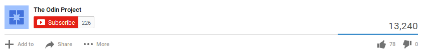

Contributing to Open Source Part I: The Easy Way

Published on Feb 27, 2014
How do you contribute to open source? In this video, I'll describe the easiest way to make a simple contribution to an open source project -- without using the command line, a text editor, "forking a repo", or even touching Git outside of Github. I'll also describe what kinds of contributions open source software projects are typically looking for. As an example, I use submitting a student solution to a web development exercise from The Odin Project, a free online curriculum for learning web development with Ruby on Rails. You can find more information about that project at http://theodinproject.com.
How do you contribute to open source? In this video, I'll describe the easiest way to make a simple contribution to an open source project -- without using the command line, a text editor, "forking a repo", or even touching Git outside of Github. I'll also describe what kinds of contributions open source software projects are typically looking for. As an example, I use submitting a student solution to a web development exercise from The Odin Project, a free online curriculum for learning web development with Ruby on Rails. You can find more information about that project at http://theodinproject.com.

Sampath Lokuge
Nice.Thanks a lot :)
Richard Dickinson
I am working through the Odin Project which is good but it took me ages to figure out how to submit my solution to the HTML/CSS project.I posted in all places (on the Odin website, on Google+ and others) and I finally got a reply (thanks hgducherne). However I'm still waiting for the repo admin to accept my pull request, so this has been a slow, tedious process as my first introduction to contributing on GitHub. Shame I didn't see this video earlier and I hope my pull request is dealt with soon.....
andrewscheuermann05
FYI: the edit button has changed to a diagonal pencil